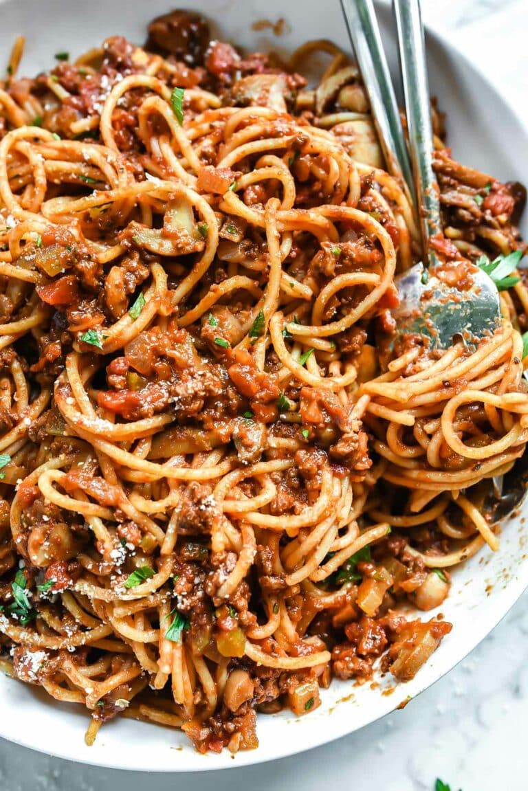

Spaghetti

Easy to make Spaghetti reciepes
A must add reciepe for the ones who dont have the time to spend a lot of time
cooking but want to make sure the family is fed properly.
Ingredients
- Angel hair pasta
- 80/20 ground beef
- 1/2 onion
- 20oz can of crushed tomatoes
- 2tbsp of tomato paste
- 1tbsp of garlic powder
- 1tbsp oregano
- 2tps of salt
- 2tps pepper
- 1/2 bunch parsley chopped
- 1/2 cup of parmesan for garnish